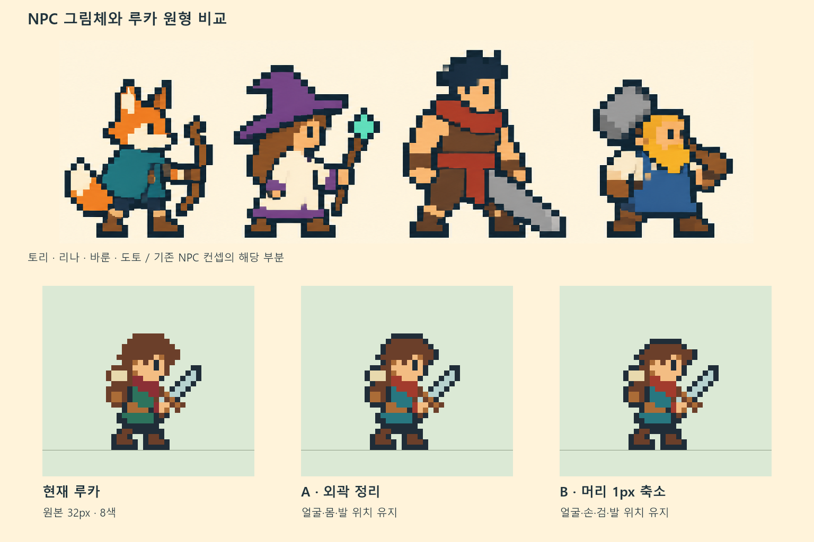
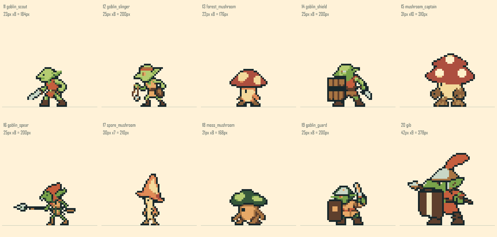
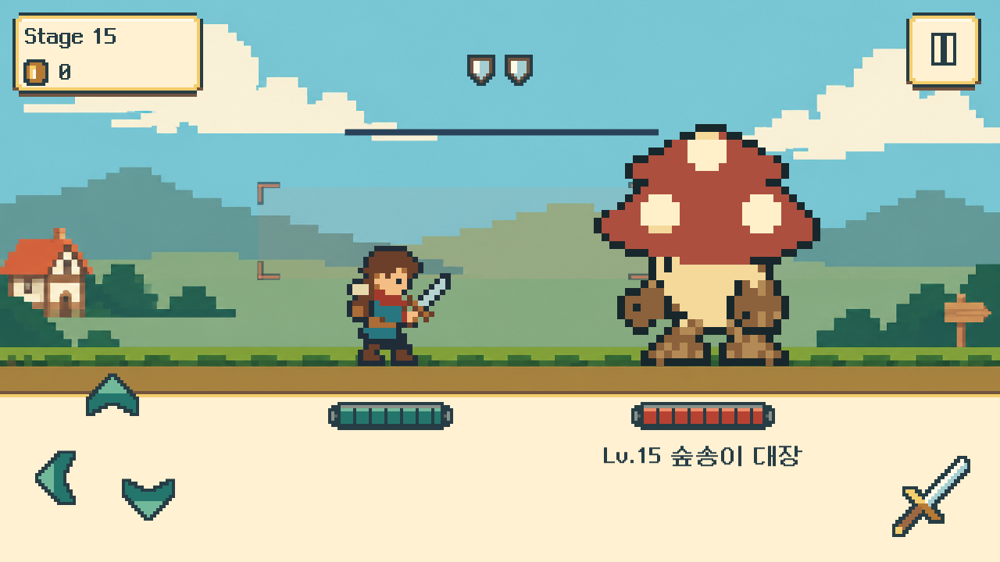
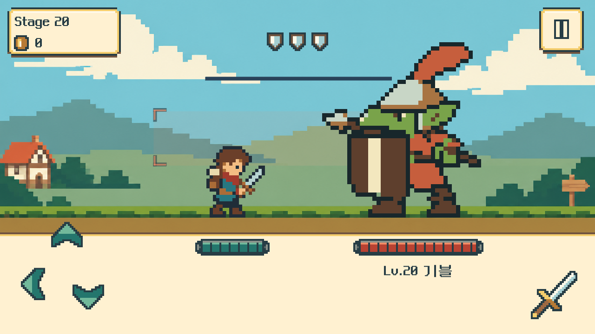
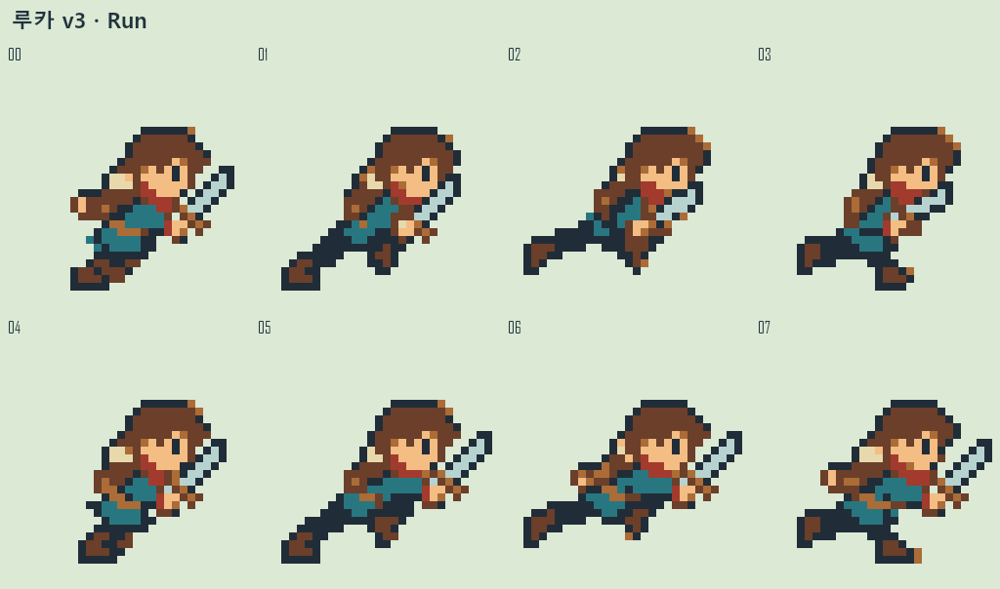

1스테이지부터 새 출발
이번0.9.2 Windows 실행판은 별도 진행을 처음부터 시작합니다. 기존 사용자 기록은 보존하며, 이후 실행은 새 진행을 이어갑니다. 매번 기록을 지우는 방식은 아닙니다.
FOREST + ADVENTURER · V0.9.2
11~20층은 고블린·숲송이·대장 기블로 바꿉니다. 주인공 이름은 루카. NPC의 짙은 남색 외곽과 색면에 맞춰 모험가 외형을 보정하고, 지역마다 발을 딛는 지면을 명확히 정의합니다.
Unity 적용·관측 QA 완료. 11~20 숲 몬스터, 루카 외형, 공통 접지와 새 시작을 연결했습니다. 1280×720·640×360에서 관측하고, 공격 뒤 순간 복귀를 수정해 해당 구간을 다시 확인했습니다. 현재 실행 범위는20층이며,21~50과 전용 스킬은 후속 기획입니다.




이번0.9.2 Windows 실행판은 별도 진행을 처음부터 시작합니다. 기존 사용자 기록은 보존하며, 이후 실행은 새 진행을 이어갑니다. 매번 기록을 지우는 방식은 아닙니다.
검사 루카·수호기사 다렌·마법사 미엘, 고블린 대장 기블. 기존 ID와 진행도 연결은 유지합니다. 현재 선택 가능 캐릭터는 루카이며 다른 두 명은 준비 중입니다.
정지·준비·회복은 같은 접지선에, 도약은 의도한 높이에 놓습니다. 숲 구간은 바닥 색조를 구분합니다. 전용 숲 배경이나50개의 개별 바닥 그림이 모두 완성된 것은 아닙니다.
최종 QA 기록 · 빌드·ZIP 검증 · 총괄 실제 화면 검토 · 작업 범위·완료 기준 · 스테이지·이름 연결
ZIP 전체를 풀고 LastBellMvp.exe를 실행합니다. 새 프로필은 Stage1부터, 다음 실행은 같은 진행을 이어갑니다. 관측 빌드에서 검증했으며 일반 실행판은 빌드·패키지 무결성을 확인했습니다. OS 실입력·모바일 실기기와 정상 속도 영상 재생 검증은 후속입니다.
같은 캐릭터의 얼굴·의복·가방·검을 전 프레임에서 유지합니다. 땅을 딛는 순간과 일부러 뜨는 순간을 나누며, 프레임마다 발을 바닥에 강제로 붙여 도약을 없애지 않습니다.
| 동작 | 확정한 표현 | 접지·타이밍 |
|---|---|---|
| 달리기 | 몸을 앞으로 기울이고 팔·다리를 반대로 교대. 가방과 검 유지. 화면 속 플레이어의 기준 x는 고정하고 땅·배경이 이동. | 8장·한 주기400ms. 02/06은 의도적인2px 체공이며 나머지 지지발은 공통 선을 따른다. |
| 베기 | 적에게 빠르게 접근→칼을 크게 베기→검 회수→원위치. 찌르기로 바꾸지 않는다. | 14장·접촉 프레임7. 사선 참격은 별도 효과이며 몸 시트에 잔상으로 박아 넣지 않는다. |
| 위·뒤 회피 | 위는 다리를 접어 공간을 비우고, 뒤는 상체와 발을 함께 빼낸다. 아래 입력은 기존 쳐내기 유지. | Up8장·Back8장. 공중 offset과 판정 시간을 기존 전투 규칙에 맞춘다. |
| Idle·피격 | 작은 호흡과 중심 이동, 피격 시 전신 흰 플래시·복귀. 발을 계속 미끄러뜨리지 않는다. | Idle8장·Hit6장. 자세 변화와 바닥 위치 보정을 분리한다. |
| 숲의 적10종 | 각자 Idle·공격·기절. 무기 방향, 준비→접촉→회복, 큰 보스의 얼굴 위치를 원본과 실제 렌더에서 확인. | 공통 발 피벗과 개체별 정수 배율. 중간보스와 보스는 몸 자체를 크게 표현한다. |
